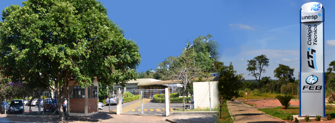
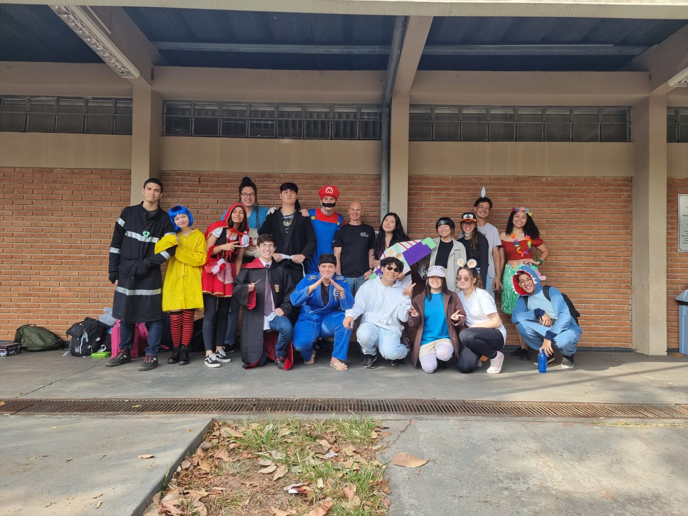
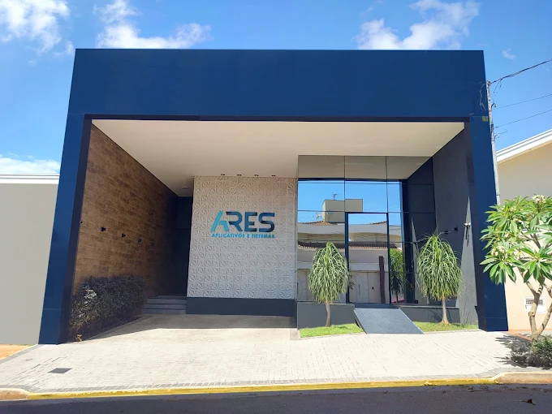

Minha Jornada

Primeiros Passos na TI
Minha trajetória se deu início no Colégio Técnico Industrial prof Isaac Portal Roldán em Bauru. Ainda em época de pandemia, realizei o vestibulinho em 2020 e fui chamado para cursar em 2021.

Conclusão do Ensino Médio, Curso Técnico e Iniciação Científica
Um marco importante com a conclusão do técnico no CTI Unesp e o desenvolvimento do projeto de Smart Grids.
Foram 3 anos marcados por muita luta acordando todos os dias às 04:30 da manhã, mas que no final, valeram à pena.

Ares Aplicativos e Sistemas
Com início em março de 2024, a Ares me abriu as portas para o mercado de trabalho na área de T.I.
Atuando como Analista de Suporte Técnico, fiquei por 6 meses até surgir uma oportunidade para meu emprego atual.
Faculdade de Tecnologia de Jahu
Início no curso de Gestão da Tecnologia da Informação (noturno) buscando me desenvolver profissionalmente para conseguir melhores oportunidades na área
.png)
Domtec Sistemas
Após 6 meses de experiencia na área de sistemas ERP, iniciei como implantador junior na Domtec sistemas, onde estou até o momento.